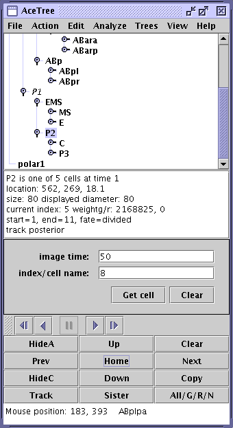

AceTree
AceTree is a user interface program to facilitate visualization,
enjoyment, editing, and analysis of the results obtained with the
StarryNite automatic cell lineaging software developed in the Waterston
Lab.
There are two main inputs to AceTree.
- A directory containing tif images of the developing embryo
- A zipped set of "nuclei files" which are the main output of StarryNight
AceTreeDemo
AceTreeDemo is a tutorial introduction to the current results of the C
Elegans automated lineaging research project in the Waterston Lab of the
Genome Sciences Department, University of Washington Medical School. It
uses the java language user interface program AceTree developed to
examine the results of an analysis which was carried out by the
StarryNite program written in C. The demo contains actual data from an
experiment combined with results from the analysis which produces the
lineage information.
Requires JAVA
The key prerequisite for using the program is to have Java installed on
the computer and in the "path" used by the operating system. One can
determine if this prerequisite is met by opening a terminal or cmd
window and typing java at the prompt. This should bring up a java
"usage" reminder message. If you do not have java installed see your
Systems Administrator.
Installation and Startup
AceTreeDemo is distributed in zip form as AceTreeDemo.zip. The zip
contains all the programs and data required for the tutorial. It must be
unzipped and will create a directory called AceTreeDemo as a
subdirectory of the directory containing the zip file.
To run the program open a cmd or terminal window in the AceTreeDemo directory
and type in:
java -jar AceTree.jar
Main Control Window and Menu
When successfully launched, the program brings up the main control
window. Without examining this in detail at this point, just notice that
there is a menu bar with a File menu. Click on that and select "Open
config file". This brings up a conventional file selection dialog.
Select file demo.dat and click open. This will open the main image
window and also fill in some detail on the main control.
Your AceTree session is underway.
How to shut it down
Either select Exit from the File menu or click the x box on the title
bar of the main control.
The sample dataset
The file demo.dat contained a description of the image and annotation
files that you wished to use. The image files are the raw data of an
experiment that examined the development of a wild type C Elegans
embryo. The annotation files are the output of the StarryNite program
which has analyzed the images and produced detailed annotations which
track each cell in the embryo over time. The title bar of the image
window tells us that we are looking at data taken on 081505. That
experiment tracked the developing embryo from the 4 cell stage at one
minute intervals taking a "z stack" consisting of 35 planes at each time
point. The StarryNite analysis available here tracked the images for the
first 153 time points. To keep the demo size down, actual image data
is only available here for the first 50 time points. AceTree makes it
possible to interact with both the images and the analysis.
To reiterate, AceTree takes two main inputs: a time series of tiff image
stacks and a set of annotations usually in a zip archive where each file
in the annotation archive provides detailed annotation on a single time
point. AceTree uses the annotation archive to generated a tree
representation of the lineage and to annotate the images as they are
inspected. It then facilitates interactions with the lineage tree and
the image series.
The main image window
The title bar of the image window contains key information about the
particular image shown. The opening title is:
tif/081505_L1-t001-p17.tif. This is an image from the first time
point (t001) at the 17th plane (p17). The image displays a white circle
and three blue circles each containing relatively dense green core, the
whole being on a faint green haze background. The core green within the
circles is due to the green fluorescent protein expressed by the
speciman: this is an essential feature of the experiment which has
enabled StarryNite to locate the nuclei. Inside the white circle is the
white identification ABa. The white circle designates the "current
cell" of interest and the name is the canonical name assigned to this
one of the four cells present at time one of this series.
Adding cell name annotations
Notice that
this image clearly shows 4 cells. Left click in the center of each to
cause its name to appear. It should be possible to show the image with
cells following clockwise from the left as ABa, EMS, P2, ABp. This is
the classic 4 cell stage view. Notice that repeated left clicking in the
center of a cell results in the name toggling on and off. This is one
way you can choose how much name annotation is shown.
Once the four cell names are known, we can tell that the experimenter has
arranged the embryo with the anterior to the left and dorsal on top.
The
image below shows what your ImageWindow should look like at this point.

Control window layout -- the JTree
Next, turn your attention to the control window, possibly left clicking on the
AceTree title bar to bring focus to that window. Below the title bar note the
menu and then four or five distinct areas or panels, the top of which is the
representation of the lineage tree. You may recognize this due to its similarity
to the way hierarchies of files are represented in many parts of "windows"
programs. The "keyhole" icon next to the four founder cells implies that there
are additional lineage elements below that point and as in a file selection
window, clicking on a keyhole icon will expand the tree in that area. (But maybe
wait until a little further down in the demo to try that).
On the JTree at this point, three cells are labeled in bold: ABa, ABp, and
polar1. Three other cells are in italics: P0, AB, and P1. The cells
shown in italics were not actually observed in this data series. By the time
the first image was taken, the embryo had reached the four cell stage. The
cells in italics are placeholders for the cells we believe were present
prior to the time the first image was taken. By placing them there we can
show the lineage as arising from a single founder (P0).
The current cell
Notice also that cell ABa is highlighted on the lineage tree. Thus, when
using AceTree there is a "current cell" and it is shown highlighted on
the lineage tree and as a white circle on the image window. There are a
number of ways to change the "current cell".
 |
| (1) Lineage tree and current cell (JTree) |
| (2) Display panel |
| (3) Cell selection panel |
| (4) Movie panel |
| (5) Keypad |
| (6) Mouse tracker |
|
The display panel
Before considering those ways, familiarize yourself with the rest of the
panels on the AceTree window. Below the tree in panel 2 is a text field
with additional information about the current cell and time point.
ABa(1) is one of 5 cells at time 1
location: 189, 251, 17.2
size: 88 displayed diameter: 87.9
current index: 4 weight/r 2850348, 0
start=1, end=4, fate=divided
track anterior
This is the key annotation information provided by the automated lineaging
program: the name, location, size, history, and fate of the current cell. The
weight/r items tell about the strength of the green fluorescent protein (GFP)
signal and, if present, the red fourescent protein (RFP) signal in the nucleus.
The last item is the only cryptic one. Its meaning will become apparent soon
Cell selection panel
The panel 3 is an alternate cell selection panel in which the user
specifies a time point and a cell name. We will not be using this in the
demo.
Movie panel
The thin panel 4 is the "movie" panel which will be discussed later.
Keypad
The panel 5 is a keypad. This will be of great interest soon.
Reporting mouse position
The panel 6 is a text field which reports on the position of the mouse
when it is over the image. Try moving the mouse over the image now and
noticing how the position is updated. As an exercise one could move the
mouse to about the center of the ABa cell and compare the reported mouse
position with the report of the center given in panel 2. Such an
exercise provides insight into the underlying basis for AceTree. The
annotations provided by StarryNight are the basis for the text presented
in panel 2. Thus, for each nucleus it identifies, StarryNite provides
location information. That location information enables AceTree to
recognize the nucleus if the user clicks within its "centroid" on the
image window.
Basic navigation
Now, split your attention between the keypad (panel 5) and the image
window and observe the navigation possibilities. A left mouse click on
the "Next" button causes the image to change to t002 with a discernable
upward motion of the current cell. The panel 2 information confirms this
location change. A left click on the "Prev" button returns the image
window to t001.
Tracking
We will next familiarize ourselves with the important "tracking" feature
of AceTree. When it is tracking, as the user actions cause time to
change forward or backward, AceTree will select the plane at each time
point to best show the current cell "z" position. AceTree is in tracking
mode if the bottom line of the information window reports "track
anterior" or "track posterior". If it changes it can be restored by
clicking on the lower left button of the keypad or the Home button.
Now, from t001-p15 with tracking enabled click on the Next button three
times and notice that you reach t005-p15. StarryNite is reporting some z
axis motion of the center of cell ABa in these early time points and
the tracking feature has selected new image planes as required to keep
ABa centered.
Cell division
Cell division is as intriguing to designers of automatic lineaging
software as it is to cells. We know from the information window that
cell ABa divides between t004 and t005. Now, with the image window set
at t004-p15 left click on the Next button to observe this division. Lots
of stuff happens in AceTree as well as the cell: a division of cell ABa
at t004-p15 into ABal at t005-p13 and ABar at t005-p19.
To convey this information, AceTree uses a special "dumbell" display
consisting of a white circle on the anterior daughter and a magenta circle
and short connecting line on the posterior daughter. The image window
has tracked to plane 13 to keep the anterior daughter "current".
The magenta circle is locating the sister, ABar, whose spherical center is
on plane 19: the entire nucleus lies below p13 so the cyan circle is a
"ghost" locator of the sister. It is annotated with the plane number in
parentheses following the name. One might also notice that in the tree
pane the ABa lineage has opened and the highlighted cell is now ABpl.
One can "replay" the division by clicking the Prev button and then the
Next button.
Actually, a bit more happened here than initially meets the eye.
Assuming that cell ABp was carrying its annotation at time t004, one
notices that the annotation on the cell in that position at t005 has
disappeared. Left clicking in the circle to restore its annotation shows
that it is cell ABpl. Thus the transition from t004 to t005 saw both AB
cells dividing. The best way to confirm that is to return to t004 and
right click on cell ABp in the image window. Right clicking on a cell in
the image window makes it the current cell. The tracking feature will
put you on image t004-p16, the home plane of ABp. Notice also that since
we have made cell ABp the current cell the display panel reports that we
are in "track posterior" mode. Then click Next to show the division:
from ABp on t004-p16 to ABpr on t005-p19 with a sister slightly to the
left centered in p20. The dumbell display is in cyan to remind you
that the sister is above the current plane.
Navigating planes
We can use the Up button on the keypad to move up in planes one at a
time to move toward sister cell ABpl. As we do this, the circle
representing ABpr gets smaller since we are now above its spherical
center. On the third click (t005-p16) the circle disappears altogether.
On the fourth Up click (t005-p15) an unannotated blue circle appears in
a similar xy location, and if we left click in that circle we find it is
cell ABpl, the sister we are looking for.
A side effect of using the Up and Down buttons is that tracking is disabled as
can be seen on the last line of the information display -- not tracking. To
underscore this, first left click on the cell to the right of ABpl to annotate
it as P2. Now, starting at t005-p15 use the Next button to move forward in time.
Things are happening in the embryo but AceTree is staying at plane 15. In
particular, P2 is moving: at time 10 its z position is such that it has no
projection on plane 15 but it you click Next one more time it reappears and from
the pattern of green inside the circle we know that it as formed its metaphase
plate. The division takes place between t011 and t012; click Next one more time
and at t012, still in plane 15, if you left click on the the small nuclei where
P2 was last seen you will find cell C. This has demonstrated moving in time
without tracking -- we see the action taking place on a given plane rather than
from the point of view of the current cell.
Survey of the tree
At this point the tree display is still showing ABpr as the current cell
Click the Home button to restore tracking and return to the home
location of ABpr t005-p19.
At this point turn your attention to the tree pane. Without clicking on
any cell names, use the left mouse button on the keyhole icons to expand
the lineage such that the following cells appear at the ends of the
lineage: ABala, ABalp, ABara, ABarp, ABpl, ABpr, MS, E, C, P3, polar1.

Note that you will need to use the scroll bar on the tree panel to
accomplish this. Then left click on ABala. This brings up t028-p20 and
the information display reports that ABala is one of 11 cells at this
time. The cells showing at the ends of the lineage are those 11 cells.
The window t019-p15 shows the division that produced cells ABala and
ABalp from ABal with the dumbell motif.
Now left click on ABara on the tree and see the ABar division daughters.
Left clicking on ABpl produces another daughter/daughter display. Left
clicking on MS produces the EMS daughters. This is a somewhat special case
because both daughter cells are centered in the same plane. The dumbell display
covers this up but the numerical result confirms it and if you move the mouse
over the image, the cyan dumbell will go away but the blue circle is in the
same place and a left click in there sets the E annotation.
Finally left click on C. Here we have reviewed 5 of the six
total divisions that have occurred between time t001 and t019, the sixth
being the ABa division studied initially.
Using right click on the JTree
We have seen that a left click on the tree brings up a cell at its birth. Now
right click on cell MS. A right click brings up a cell at its point of division
or death. MSa divides between time 20 and 21. Note the metaphase plate in cell
MS at time 20 then click Next once to see the daughters MSa and MSp at time 21,
The demo program only contains image data out to t050. This is done to
keep the size down: almost all of the demo zip file size is due to the
image data. It does contain StarryNite lineage data out to t153 and this
can be examined. But first, we can reach an interesting plane at t050 by
using the cell selection panel just below the information display. In the
Image time field put the value 50. Then in the index/cell name field put
the value 8. This is asking to locate the eight nucleus identified by
StarryNite at time 50. Note that one can enter either an index or a cell name,
but sometimes to reach a particular time it is best to guess an index and see
what you get. Once at the time, it will be possible to click on the image to
bring up other cells at that time.
In this case, if we click on Get cell, the ImageWindow comes up at time 50 with
cell ABarpa highlighted and the image is at plane 13. From the display window
note that there are 27 cells present at this time point. Eight of them have
projections in plane 13.
Left click on each cell
showing in the image to find the following cells: ABarpp, Cp, Ca, ABplpp,
ABplpa, ABalpp, ABalap.
Now click Next once to move to time 51. There are no cell divisions in this case
and StarryNite has tracked each of the eight cells to a slightly different
location at time 51. Since we have now advanced time beyond the last of the
tif images available in the demo, the background is pure black. Although
this is disconcerting at first, one can reach a point where one's focus is
on the annotated lineage and cell locations rather than on the underlying
image data. In that sense, the demo continues to have considerable utility
in studying the development of this embryo.
Viewing data as a movie
Data can be scanned in "movie" mode. To see this, left click ABal in the
tree window. Then, in the movie panel (4) click the single right
arrowhead to start the movie. To stop or pause it before t153 click the
double vertical button in the middle. Watch for marked transitions and
note that the movie continues following the anterior daughter. To get a
sense for the intensity of analysis required at the later stages, allow
the movie to continue to its end at t153 when StarryNight has found and
tracked to a stage at which there are 194 cells and the tree has
expanded such that the current cell is ABplaaaal.
The tracking rule
The tracking rule is that following divisions the current cell becomes
the anterior daughter if the original cell was an anterior daughter or a
founder cell (in the is case one of: ABa, ABp, EMS, P2). If the original
cell was a posterior daughter, then posterior daughters of subsequent
divisions will be chosen as the current cell. A different path through
the data can thus be taken by making ABpr the initial cell.
Sulston style tree
Besides the file explorer style tree we have been using, AceTree
supports a "Sulston" style tree. To experiment with this, select cell C
in the regular tree window (left click) to bring up image t012-p15. Now
go to the Trees menu item and select Ancestral tree. Expand the window to
view the tree which shows the C lineage. The Ancestral tree is built out
from the current cell to the leaves (most of which are in images well
beyond the t050 demo limit). Like the tree in the main control, the
Anceltral tree is "live" in the sense that a left click will will cause
the current cell to change. In this case, points between the "birth" and
end time of a cell can be found by clicking on the line down from the
birth point. For example, click a little way down the line from the Ca
cell marked on the Sulston tree to bring up an image between t030-p11
and t052-p12 the start and end times of Ca.

Space filling nuclei model
AceTree has an additional interesting feature that is only available if
your java installation includes Java3D. If it does, try this: with Ca
selected by a left click in the main tree window (or indeed in the
Ancestral tree) choose menu item View then 3D View. This brings up a space
filling model of the embryo at the same time point as in the main image
window (nominally t030. The cells are color coded by lineage as follows:
ABa in red; ABp in blue; MS in cyan; E in green; C in magenta; P in yellow;
D in pink; polar in gray. The image can be rotated clicking the
rotateX button.
mouse.

If tracking mode is on, then actions like Next and the movie play cause
the 3D image to change in time. As an interesting application of this,
select the ABa cell in the tree panel and then bring up the 3D View at
t001. While watching the red and
blue spheres representing ABa and ABp, press the Next button four times.
This has advanced to t005 and ABa and ABp have both divided.
In each case the daughters lie one behind the other. If you click rotateX
they can be seen more clearly. If you left click on one of the four AB
daughters the name of the cell will show up on the bottom border of the
3D image. In this series the z image axis has the embryonic left axis
towards the viewer.
For fun, with the 3D image in the position reached above, use the movie control
to start a 3D movie. Watch how the green E cells line up in the interior of the
embryo to form the gut. When the movie stops at time 153 use the rotateX
button to examine the embryo from different perspectives.